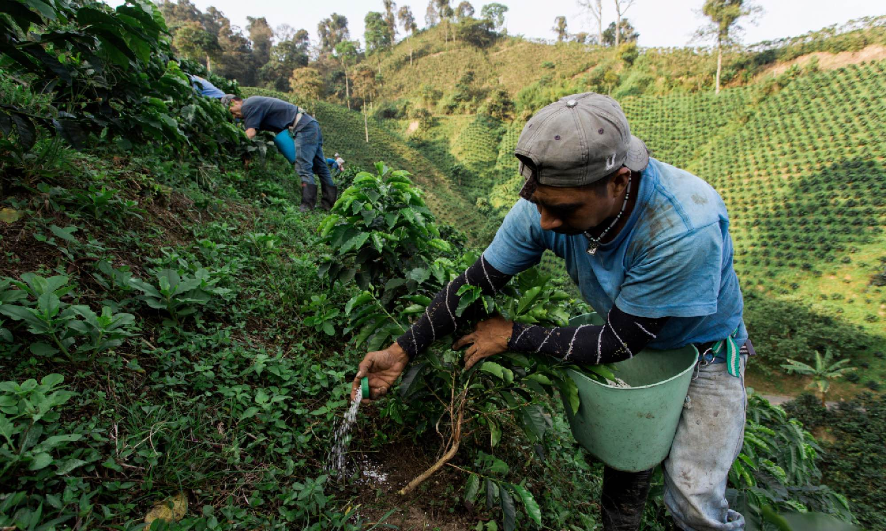

Why does it matter where the beans come from?
Fair trade coffee plays a vital role in promoting ethical and sustainable practices within the global coffee industry.
By ensuring that farmers receive a fair price for their crops, fair trade helps protect small-scale growers from exploitation and the volatile fluctuations of the global market. This pricing model not only supports basic living standards but also enables
farmers to invest in better farming practices, education, and community development.

Crops, fair trade helps protect small-scale growers from exploitation and the volatile fluctuations of the global market. This pricing model not only supports basic living standards but also enables
farmers to invest in better farming practices, education, and community development.
cation, and community development.
crops, fair trade helps protect small-scale growers from exploitation and the volatile fluctuations of the global market. This pricing model not only supports basic living standards but also enables
farmers to invest in better farming practices, education, and community development.